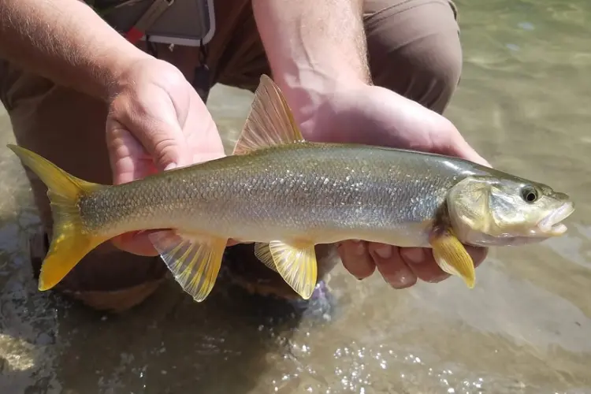

Assignment 2
Northern pikeminnow

For my recipe I chose to make Northern pikeminnow. Northern Pikeminnows are native to the Fraser river
where they prey heavily on juvenille salmon. I usually encounter Northern Pikeminnow while lure fishing for
cutthroat trout, when i catch them i usually keep them for dinner,also to help juvenille salmon. Today
i will tell you the best way to cook a Nortern pikeminnow.
Ingredients
- Northern pikeminnow around 1 pound or larger
- sprinkle of garlic powder
- olive oil
- salt+pepper
- Tomatoe slices(optional)
Instructions
- Preheat oven to 375
- Gut the fish
- Put some tinfoil over a pan
- Add olive oil to the pan then set the fish down onto the oil
- Sprinkle garlic powder on both sides of the fish
- Add salt+pepper, and tomatoes(optional)
- Once oven is preheated put fish in oven for 20-25 minutes until meat is white